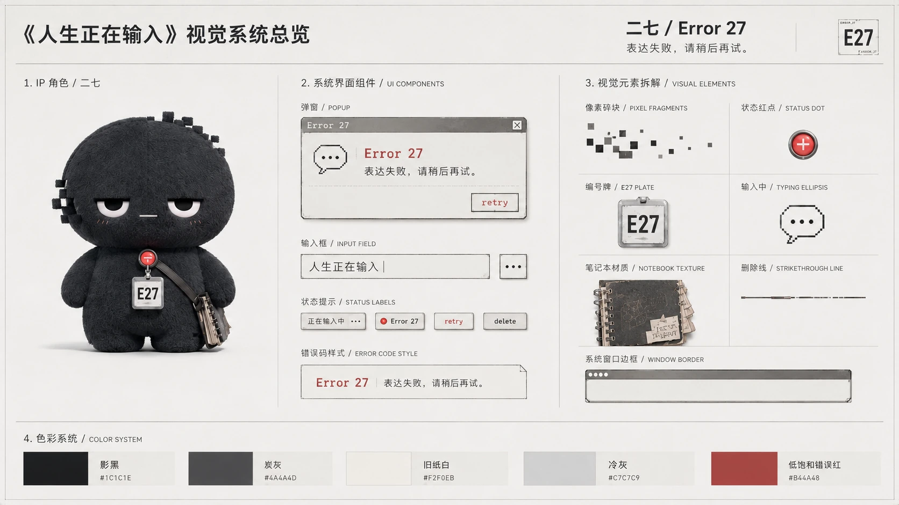
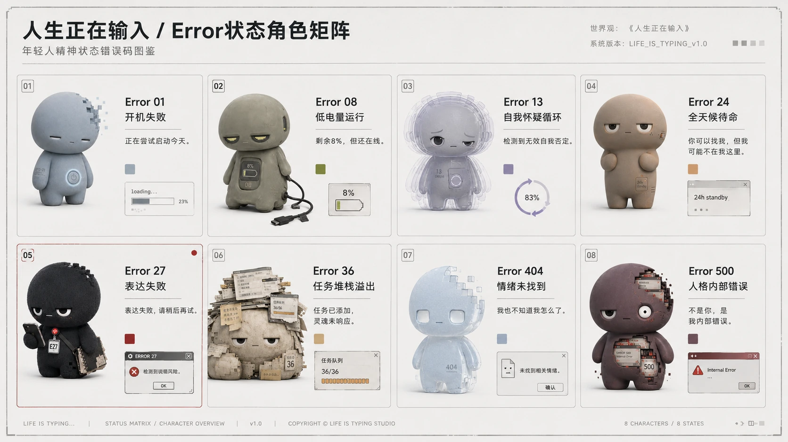
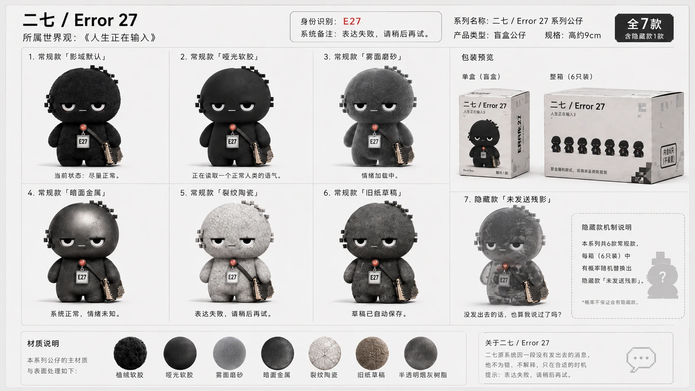
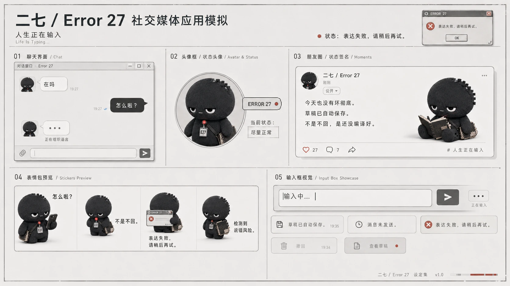

如何把审美判断变成模型评测维度
从空间结构、透视、材质、光影、风格一致性和主体关系出发，把“好不好看”拆成可讨论、可打分、可复核的质量维度，让设计背景真正参与模型评测。

Journal / 训练笔记
这里记录我在 AI 训练、模型评测、AIGC 数据规则和 IP 设计中的方法沉淀。它不是正式论文，也不是随笔博客，而是把项目过程里的判断、失败样本、规则迭代和设计逻辑整理成可以复用的工作笔记。
这些笔记对应作品集里的真实项目：一部分来自模型评测和标注管理经验，一部分来自 Error 27、Sanctuary Codex 和个人电台的设计过程。它们共同说明一件事：好的作品不只依赖灵感，也依赖可以复盘、可以迁移的规则。
从空间结构、透视、材质、光影、风格一致性和主体关系出发，把“好不好看”拆成可讨论、可打分、可复核的质量维度，让设计背景真正参与模型评测。

基础集负责保证版本之间可对比，专项集负责验证边界能力。写 Prompt 时不只追求画面效果，更要控制变量、覆盖典型场景，并为 SBS 横向评测保留稳定条件。

失败样本需要被重新命名：主体错误、透视错乱、材质混淆、风格漂移、信息遗漏、关系不成立。只有问题被归类，下一轮规则和数据才知道该往哪里补。

这个世界观不是从单个角色开始，而是先确定“冰河纪元”的总体气质：寒冷、信仰、技术边界和生存压力。随后把这个气质拆成可展示的系统文件，包括圣域存续疆图、异常能力体系、日冕圣廷、白寂修会与破晓武装三组阵营。
整理时我把主视觉放在最前面，用一张大图先建立世界温度和冲突方向；再按系统、角色、阵营与场景分区，让观众先理解规则，再进入人物关系。角色设定按照阵营排序，是为了让人物不只是单张设定图，而能回到政治结构、能力来源和叙事立场里。
“表达失败，请稍后再试”先是一个情绪状态，再变成角色设定、社交应用界面、状态头像和表情包逻辑。IP 设计的关键不是只做形象，而是让角色能在不同媒介里保持同一种语言。

Companion Current 不是通用播放器，而是围绕个人习惯、情绪节律和音乐记忆组织的电台体验。它的重点不是“播放”，而是让 AI 播报员知道什么时候出现、说什么、如何不打扰。